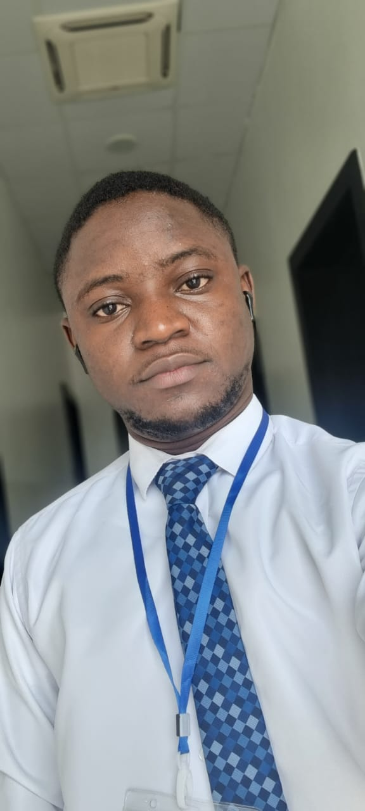

Kehinde Omotoso | WDD 130
My name is Kehinde Omotoso, and I am driven by a profound passion for everything related to computers and technology. I embarked on my journey with electronics at a young age, delving into the intricate world of circuits and components. Witnessing the seamless integration of various elements, much like the precision of the Solar System, fascinates me. It's incredible to observe how these technical marvels impact our lives directly. Despite being an avid enthusiast, I firmly believe in the importance of continuous learning and exploration. I am convinced that no knowledge acquired is ever a waste, and every experience contributes to personal and intellectual growth. Beyond the realms of technology, I find joy in diverse interests. Music has a special place in my heart, resonating with my emotions and providing an escape into different worlds. Cooking is another passion of mine, as it allows me to experiment with flavors and create delightful experiences. I am drawn to impressive architectures and good designs, appreciating the artistry and functionality that thoughtful design brings to the world. It is this intersection of creativity and functionality that motivates me to pursue a degree in Software Development. I am eager to delve deeper into the intricacies of software, understanding how it shapes the digital landscape and influences the way we interact with technology. As I chart my educational path, my aspiration is not only to acquire a degree in Software Development but also to continue my education in this dynamic field. The journey of exploration and learning is a perpetual one, and I am excited about the opportunities that lie ahead in the ever-evolving world of technology.